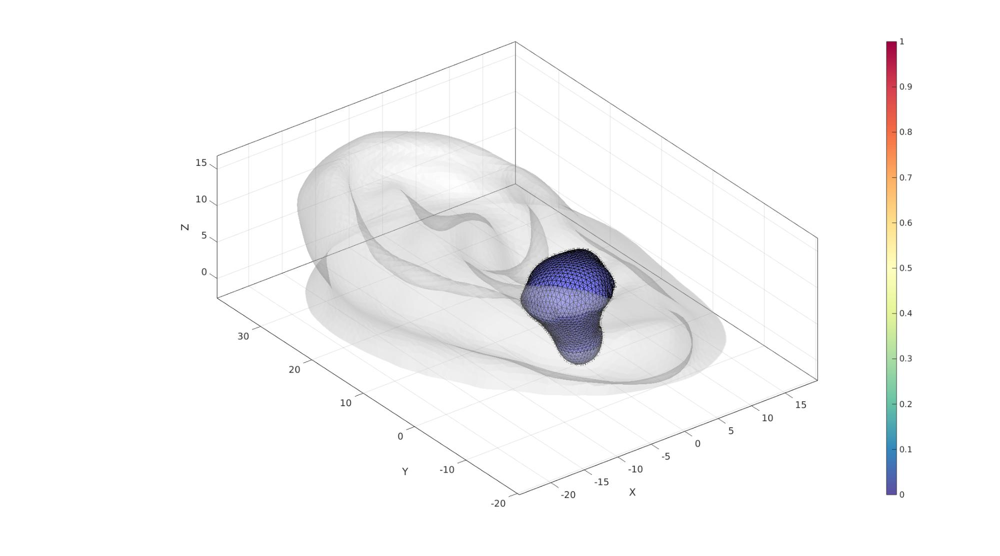
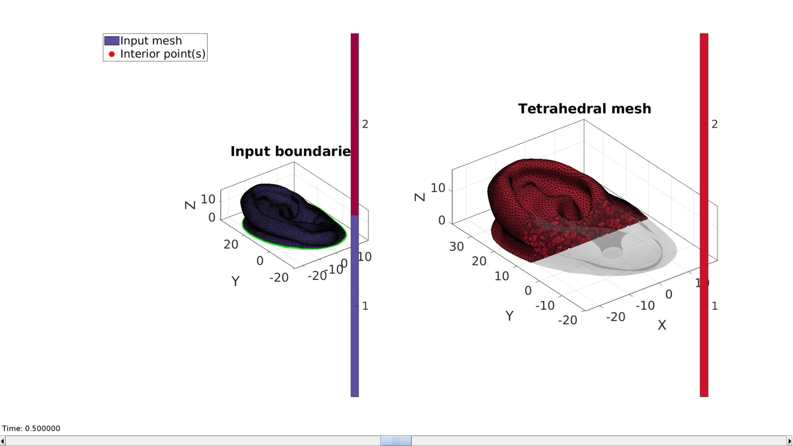
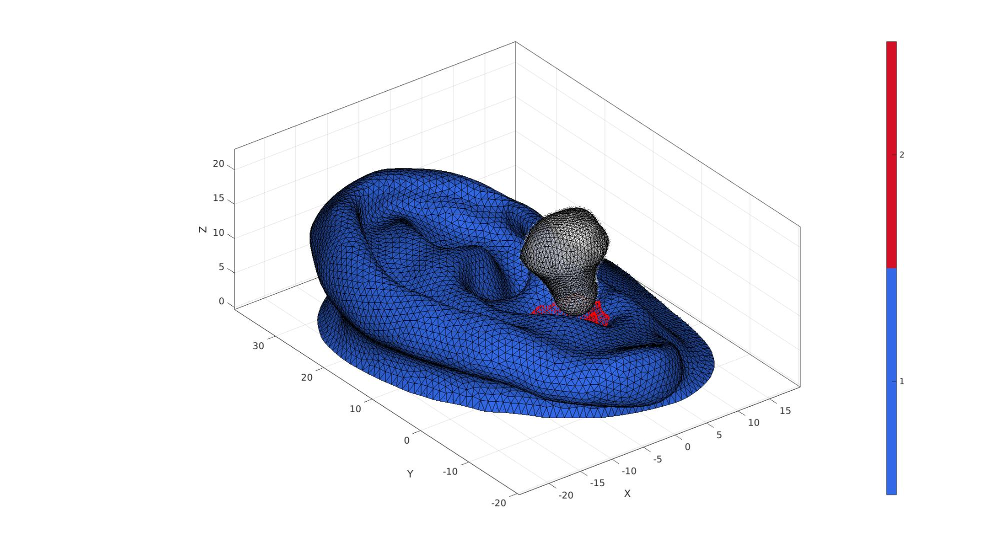
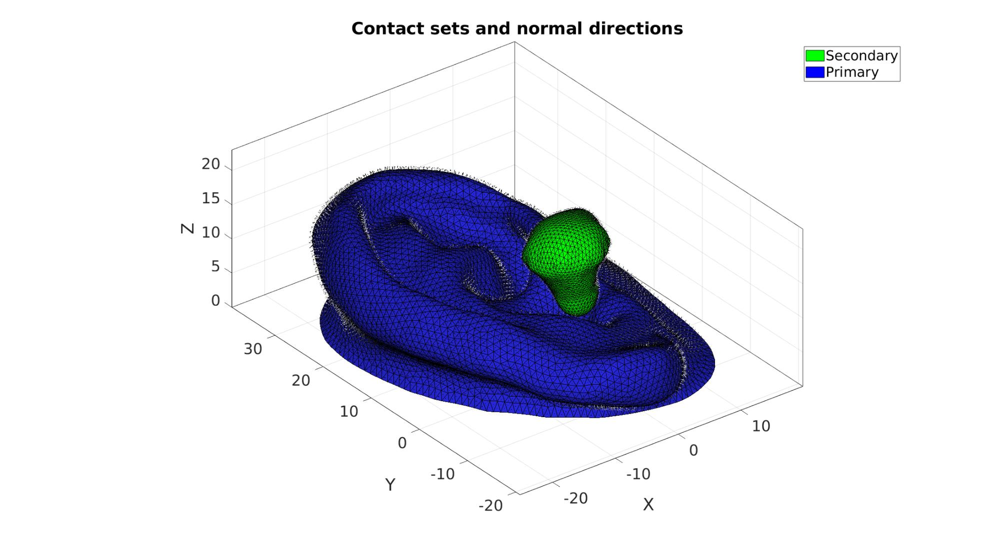
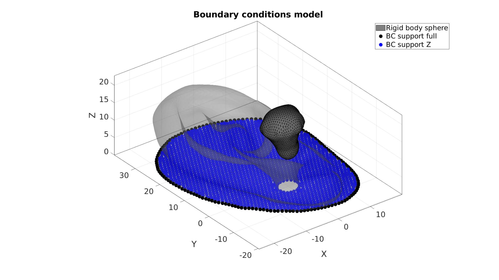
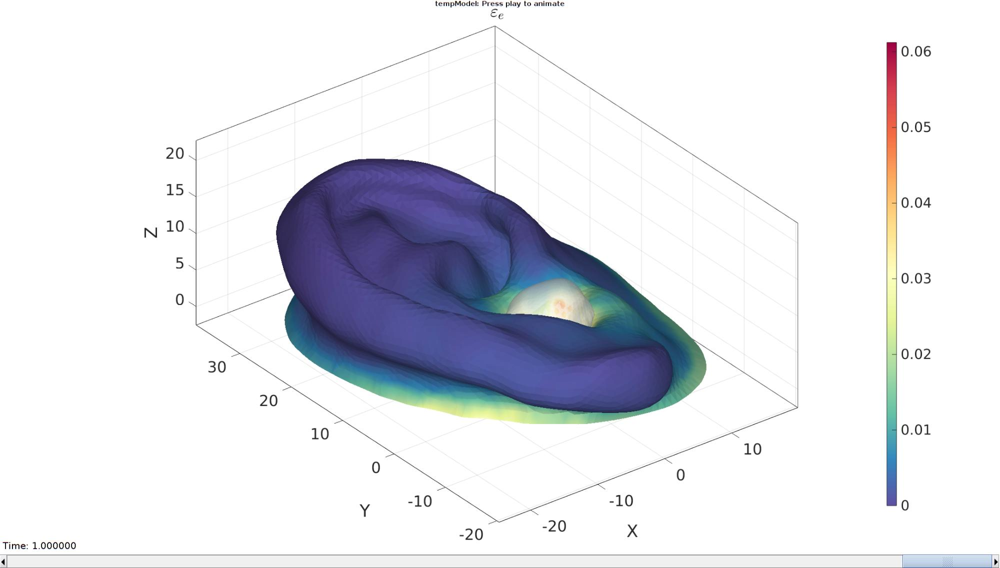
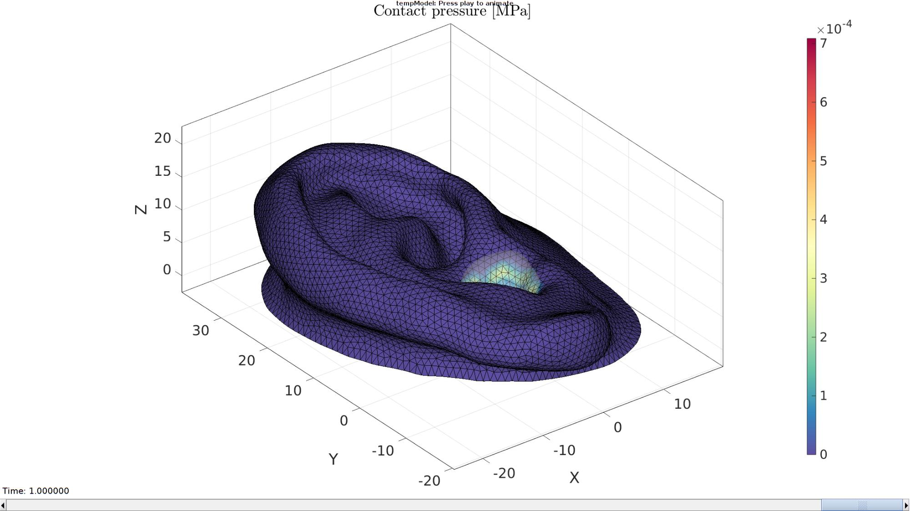

Contents
% DEMO_febio_0086_earbud_insert_01.m % Below is a demonstration for: % % * Building geometry for a thin sheet kresling structure % * Define the sheet as shell elements % * Defining the boundary conditions % * Coding the febio structure % * Running the model % * Importing and visualizing the results
Keywords
- febio_spec version 4.0
- febio, FEBio
- earbud design
- earbud insertion
- displacement control, displacement boundary condition
- shell elements, tri3
- static, solid
- hyperelastic, Ogden
clear; close all; clc;
Plot settings
fontSize=25; faceAlpha1=0.8; faceAlpha2=0.3; markerSize=40; markerSize2=20; lineWidth=3; cMap=spectral(250);
Control parameters
% Path names defaultFolder = fileparts(fileparts(mfilename('fullpath'))); savePath=fullfile(defaultFolder,'data','temp'); % Defining file names febioFebFileNamePart='tempModel'; febioFebFileName=fullfile(savePath,[febioFebFileNamePart,'.feb']); %FEB file name febioLogFileName=[febioFebFileNamePart,'.txt']; %FEBio log file name febioLogFileName_disp=[febioFebFileNamePart,'_disp_out.txt']; %Log file name for exporting displacement febioLogFileName_stress_prin=[febioFebFileNamePart,'_stress_out.txt']; %Log file name for exporting stress febioLogFileName_strain_prin=[febioFebFileNamePart,'_strain_out.txt']; %Log file name for exporting strain febioLogFileName_contactPressure=[febioFebFileNamePart,'_contactPressure_out.txt']; %Log file name for exporting contact pressure %Mesh parameters pointSpacing=1; tetInternalVolumeFactor=10; %Make internal tets this factor larger in terms of volume, than the boundary tets overSizeAmount=0.1; % sphereRadiusFactor=2; %Make the sphere this factor larger in terms of radius than the radius of the ear canal bcSupportType=2; %1 for full on back , 2 for z-support on back and full on back boundary %Material parameter set c1=1e-3; %Shear-modulus-like parameter m1=6; %Material parameter setting degree of non-linearity k_factor=100; %Bulk modulus factor k=c1*k_factor; %Bulk modulus % FEA control settings numTimeSteps=10; %Number of time steps desired max_refs=25; %Max reforms max_ups=0; %Set to zero to use full-Newton iterations opt_iter=10; %Optimum number of iterations max_retries=5; %Maximum number of retires dtmin=(1/numTimeSteps)/100; %Minimum time step size dtmax=1/numTimeSteps; %Maximum time step size symmetric_stiffness=0; runMode='external';% 'internal' or 'external' %Contact parameters contactInitialOffset=0.1; contactPenalty=20; laugon=0; minaug=1; maxaug=10; fric_coeff=0;
[F1,V1]=graphicsModels(14); optionStruct.pointSpacing=pointSpacing; %Set desired point spacing optionStruct.disp_on=0; % Turn off command window text display [F1,V1]=ggremesh(F1,V1,optionStruct); [Eb1,Eb_canal,Eb_outer,indBoundaryCanal,indBoundaryOuter]=getEarBoundaries(F1,V1); indBoundaryAll=unique(Eb1); V1(indBoundaryAll,3)=0; %Get centroid VE=patchCentre(Eb_canal,V1); LE=edgeLengths(Eb_canal,V1); Vm=sum(VE.*LE)./sum(LE); %Centre coordinates on centroid V1=V1-Vm(ones(size(V1,1),1),:); %Get ear canal mean radius VE=patchCentre(Eb_canal,V1); RE=sqrt(sum(VE.^2,2)); Rm=sum(RE.*LE)./sum(LE); [F2,V2]=regionTriMesh2D({V1(indBoundaryOuter,[1 2]),V1(indBoundaryCanal,[1 2])},pointSpacing,0,0); F2=fliplr(F2); V2(:,3)=0; [F,V,C]=joinElementSets({F1,F2},{V1,V2}); [F,V]=mergeVertices(F,V); [Eb1,Eb_canal,Eb_outer,indBoundaryCanal,indBoundaryOuter]=getEarBoundaries(F(C==1,:),V);
%Option set indStart=indBoundaryCanal; %Index of the start point %Compute distances on mesh description d=meshDistMarch(F(C==1,:),V,indStart); indFront=unique(F(C==1,:)); logicFront=false(size(V,1),1); logicFront(indFront)=1; indBudDesign=find(d<10 & logicFront); logicCopyFaces=all(ismember(F,indBudDesign),2) & C==1; logicCopyFaces=triSurfLogicSharpFix(F,logicCopyFaces,3); F_base=fliplr(F(logicCopyFaces,:)); V_base=V; [F_base,V_base]=patchCleanUnused(F_base,V_base);
Eb_base=patchBoundary(F_base); groupOpt.outputType='label'; [Gb,~,groupSize]=tesgroup(Eb_base,groupOpt); Eb_base1=Eb_base(Gb==1,:); Eb_base2=Eb_base(Gb==2,:); if max(V_base(Eb_base2(:),3))>max(V_base(Eb_base1(:),3)) Eb_base_top=Eb_base2; Eb_base_bottom=Eb_base1; else Eb_base_top=Eb_base1; Eb_base_bottom=Eb_base2; end indBaseTop=edgeListToCurve(Eb_base_top); indBaseTop=indBaseTop(1:end-1); indBaseBottom=edgeListToCurve(Eb_base_bottom); indBaseBottom=indBaseBottom(1:end-1); [F_base_top,V_base_top,boundaryInd_base_top]=regionTriMesh3D({V_base(indBaseTop,:)},pointSpacing,0,'natural'); [F_base_bottom,V_base_bottom,boundaryInd_base_bottom]=regionTriMesh3D({V_base(indBaseBottom,:)},pointSpacing,0,'natural'); [~,~,Nt]=patchNormal(F_base_top,V_base_top); nf=mean(Nt,1); nz=[0 0 1]; if dot(nz,nf)<0 F_base_top=fliplr(F_base_top); Nt=-Nt; end [~,~,Nb]=patchNormal(F_base_bottom,V_base_bottom); nf=mean(Nb,1); nz=[0 0 1]; if dot(nz,nf)>0 F_base_bottom=fliplr(F_base_bottom); Nb=-Nb; end db_top=minDist(V_base_top,mean(V_base_top,1)); dMean=mean(db_top); [~,indMin]=minDist(V_base_top,V_base_top(boundaryInd_base_top,:)); db_top=db_top./db_top(indMin); V_base_top=V_base_top+dMean*(Nt.*sin(acos(db_top))); db_bottom=minDist(V_base_bottom,mean(V_base_bottom,1)); dMean=mean(db_bottom); [~,indMin]=minDist(V_base_bottom,V_base_bottom(boundaryInd_base_bottom,:)); db_bottom=db_bottom./db_bottom(indMin); V_base_bottom=V_base_bottom+dMean*(Nb.*sin(acos(db_bottom))); [F_bud,V_bud,C_bud]=joinElementSets({F_base,F_base_top,F_base_bottom},{V_base,V_base_top,V_base_bottom}); [F_bud,V_bud]=mergeVertices(F_bud,V_bud); [~,~,N_bud]=patchNormal(F_bud,V_bud); V_bud=V_bud+overSizeAmount*N_bud; indSmooth=unique(F_bud(C_bud~=1,:)); indRigidSmooth=unique(F_bud(C_bud==1,:)); indRigidSmooth=indRigidSmooth(~ismember(indRigidSmooth,indSmooth)); smoothOptionStruct.n=25; %Number of smoothing iterations smoothOptionStruct.Method='HC'; %Smoothing method smoothOptionStruct.RigidConstraints=indRigidSmooth; %Indicices for nodes to hold on to V_bud=patchSmooth(F_bud,V_bud,[],smoothOptionStruct); [F_bud,V_bud,C_bud]=subTriLoop(F_bud,V_bud,1);
cFigure; hold on; gpatch(F,V,'w','none',0.25); gpatch(F_bud,V_bud,'bw','k',1); patchNormPlot(F_bud,V_bud); % plotV(V_bud(indRigidSmooth,:),'r.','MarkerSize',25) % gpatch(F_base,V_base,'w','r',1,1); % patchNormPlot(F_base,V_base); % gedge(Eb_canal,V,'b',2); % gedge(Eb_base_top,V,'y',3); % plotV(V(indBudDesign,:),'r.','MarkerSize',25) % plotV(V(indBaseTop,:),'y.-','MarkerSize',25,'LineWidth',4) % hp=gpatch(F_base_top,V_base_top,db_top,'k',1); hp.FaceColor='Interp'; % patchNormPlot(F_base_top,V_base_top); % hp=gpatch(F_base_bottom,V_base_bottom,db_bottom,'k',1); hp.FaceColor='Interp'; % patchNormPlot(F_base_bottom,V_base_bottom); axisGeom; camlight headlight; colormap spectral; colorbar; gdrawnow;
V_regions=getInnerPoint(F,V); %Define region points V_holes=[]; %Define hole points [regionTetVolumes]=tetVolMeanEst(F,V); %Volume estimate for regular tets stringOpt='-pq1.2AaY'; %Options for tetgen
Mesh using TetGen
%Create tetgen input structure inputStruct.stringOpt=stringOpt; %Tetgen options inputStruct.Faces=F; %Boundary faces inputStruct.Nodes=V; %Nodes of boundary inputStruct.faceBoundaryMarker=C; inputStruct.regionPoints=V_regions; %Interior points for regions inputStruct.holePoints=V_holes; %Interior points for holes inputStruct.regionA=regionTetVolumes.*tetInternalVolumeFactor; %Desired tetrahedral volume for each region % Mesh model using tetrahedral elements using tetGen [meshOutput]=runTetGen(inputStruct); %Run tetGen
%%%%%%%%%%%%%%%%%%%%%%%%%%%%%%%%%%%%%%%%%%%%% --- TETGEN Tetrahedral meshing --- 29-May-2023 11:28:24 %%%%%%%%%%%%%%%%%%%%%%%%%%%%%%%%%%%%%%%%%%%%% --- Writing SMESH file --- 29-May-2023 11:28:24 ----> Adding node field ----> Adding facet field ----> Adding holes specification ----> Adding region specification --- Done --- 29-May-2023 11:28:24 --- Running TetGen to mesh input boundary--- 29-May-2023 11:28:24 Opening /home/kevin/DATA/Code/matlab/GIBBON/data/temp/temp.smesh. Delaunizing vertices... Delaunay seconds: 0.023592 Creating surface mesh ... Surface mesh seconds: 0.006009 Recovering boundaries... Boundary recovery seconds: 0.013388 Removing exterior tetrahedra ... Spreading region attributes. Exterior tets removal seconds: 0.005937 Recovering Delaunayness... Delaunay recovery seconds: 0.00557 Refining mesh... Refinement seconds: 0.076125 Smoothing vertices... Mesh smoothing seconds: 0.1093 Improving mesh... Mesh improvement seconds: 0.005001 Writing /home/kevin/DATA/Code/matlab/GIBBON/data/temp/temp.1.node. Writing /home/kevin/DATA/Code/matlab/GIBBON/data/temp/temp.1.ele. Writing /home/kevin/DATA/Code/matlab/GIBBON/data/temp/temp.1.face. Writing /home/kevin/DATA/Code/matlab/GIBBON/data/temp/temp.1.edge. Output seconds: 0.022287 Total running seconds: 0.267542 Statistics: Input points: 6930 Input facets: 13860 Input segments: 20790 Input holes: 0 Input regions: 1 Mesh points: 10927 Mesh tetrahedra: 45062 Mesh faces: 97054 Mesh faces on exterior boundary: 13860 Mesh faces on input facets: 13860 Mesh edges on input segments: 20790 Steiner points inside domain: 3997 --- Done --- 29-May-2023 11:28:24 %%%%%%%%%%%%%%%%%%%%%%%%%%%%%%%%%%%%%%%%%%%%% --- Importing TetGen files --- 29-May-2023 11:28:24 --- Done --- 29-May-2023 11:28:24
Access mesh output structure
E=meshOutput.elements; %The elements V=meshOutput.nodes; %The vertices or nodes F=meshOutput.faces; %The mesh faces (all) CE=meshOutput.elementMaterialID; %Element material or region id Fb=meshOutput.facesBoundary; %The boundary faces Cb=meshOutput.boundaryMarker; %The boundary markers
Recover boundary edges
Eb=patchBoundary(Fb(Cb==2,:));
groupOpt.outputType='label';
[Gb,~,groupSize]=tesgroup(Eb,groupOpt);
[~,indMin]=min(groupSize);
Eb_canal=Eb(Gb==indMin,:);
Eb_outer=Eb(Gb~=indMin,:);
Visualization
hf=cFigure; subplot(1,2,1); hold on; title('Input boundaries','FontSize',fontSize); hp(1)=gpatch(Fb,V,Cb,'k',faceAlpha1); hp(2)=plotV(V_regions,'r.','MarkerSize',markerSize); gedge(Eb_canal,V,'y',3); gedge(Eb_outer,V,'g',3); legend(hp,{'Input mesh','Interior point(s)'},'Location','NorthWestOutside'); axisGeom(gca,fontSize); camlight headlight; colormap(cMap); icolorbar; hs=subplot(1,2,2); hold on; title('Tetrahedral mesh','FontSize',fontSize); % Visualizing using |meshView| optionStructMeshView.hFig=[hf,hs]; meshView(meshOutput,optionStructMeshView); axisGeom(gca,fontSize); gdrawnow; % Create spherical earbud model % % [F_bud,V_bud]=quadSphere(3,sphereRadiusFactor*Rm,2); % % Position earbud based on ray tracing optionStruct.tolEps = 1e-6; optionStruct.triSide = 0; optionStruct.rayType = 'ray'; optionStruct.exclusionType = 'inclusive'; optionStruct.paired = 0; minZ_design=min(V_bud(:,3)); V_bud(:,3)=V_bud(:,3)-min(V_bud(:,3))+max(V(:,3)); n=[0 0 -1]; [P,indIntersect,d,TUV]=triSurfRayTrace(V_bud,n(ones(size(V_bud,1),1),:),Fb,V,optionStruct); V_bud(:,3)=V_bud(:,3)-min(V_bud(:,3))+max(P(:,3)); center_of_mass=mean(V_bud,1); %Define applied displacement appliedDisplacement=min(V_bud(:,3))-minZ_design;
Joining node sets
F_bud=F_bud+size(V,1); %Fixed element indices V=[V;V_bud;]; %Combined node sets
cFigure; hold on; gpatch(Fb,V,Cb,'k'); plotV(P,'r.') patchNormPlot(Fb,V); gpatch(F_bud,V,'w','k',0.5); patchNormPlot(F_bud,V); axisGeom; camlight('headlight'); colormap gjet; icolorbar; gdrawnow;
Define contact surfaces
% The rigid primary surface of the sphere F_contact_secondary=F_bud; % The deformable secondary surface of the slab F_contact_primary=fliplr(Fb(Cb==1,:)); % Plotting surface models cFigure; hold on; title('Contact sets and normal directions','FontSize',fontSize); gpatch(Fb,V,'kw','none',faceAlpha2); hl(1)=gpatch(F_contact_secondary,V,'g','k',1); patchNormPlot(F_contact_secondary,V); hl(2)=gpatch(F_contact_primary,V,'b','k',1); patchNormPlot(F_contact_primary,V); legend(hl,{'Secondary','Primary'}); axisGeom(gca,fontSize); camlight headlight; drawnow;
Define boundary conditions
%Supported nodes switch bcSupportType case 1 bcSupportList_full=unique(Fb(Cb==2,:)); case 2 bcSupportList_full=unique(Eb_outer); indBack=unique(Fb(Cb==2,:)); bcSupportList_Z=indBack(~ismember(indBack,bcSupportList_full)); end
Visualize BC's
hf=cFigure; title('Boundary conditions model','FontSize',fontSize); xlabel('X','FontSize',fontSize); ylabel('Y','FontSize',fontSize); zlabel('Z','FontSize',fontSize); hold on; gpatch(Fb,V,'kw','none',faceAlpha2); hl2(1)=gpatch(F_bud,V,'kw','k',1); switch bcSupportType case 1 hl2(2)=plotV(V(bcSupportList_full,:),'k.','MarkerSize',markerSize); legend(hl2,{'Rigid body sphere','BC support full'}); case 2 hl2(2)=plotV(V(bcSupportList_full,:),'k.','MarkerSize',markerSize); hl2(3)=plotV(V(bcSupportList_Z,:),'b.','MarkerSize',markerSize); legend(hl2,{'Rigid body sphere','BC support full','BC support Z'}); end axisGeom(gca,fontSize); camlight headlight; drawnow;
Defining the FEBio input structure
See also febioStructTemplate and febioStruct2xml and the FEBio user manual.
%Get a template with default settings [febio_spec]=febioStructTemplate; %febio_spec version febio_spec.ATTR.version='4.0'; %Module section febio_spec.Module.ATTR.type='solid'; %Control section febio_spec.Control.analysis='STATIC'; febio_spec.Control.time_steps=numTimeSteps; febio_spec.Control.step_size=1/numTimeSteps; febio_spec.Control.solver.max_refs=max_refs; febio_spec.Control.solver.qn_method.max_ups=max_ups; febio_spec.Control.solver.symmetric_stiffness=symmetric_stiffness; febio_spec.Control.time_stepper.dtmin=dtmin; febio_spec.Control.time_stepper.dtmax=dtmax; febio_spec.Control.time_stepper.max_retries=max_retries; febio_spec.Control.time_stepper.opt_iter=opt_iter; %Material section materialName1='Material1'; febio_spec.Material.material{1}.ATTR.name=materialName1; febio_spec.Material.material{1}.ATTR.type='Ogden'; febio_spec.Material.material{1}.ATTR.id=1; febio_spec.Material.material{1}.c1=c1; febio_spec.Material.material{1}.m1=m1; febio_spec.Material.material{1}.c2=c1; febio_spec.Material.material{1}.m2=-m1; febio_spec.Material.material{1}.k=k; materialName2='Material2'; febio_spec.Material.material{2}.ATTR.name=materialName2; febio_spec.Material.material{2}.ATTR.type='rigid body'; febio_spec.Material.material{2}.ATTR.id=2; febio_spec.Material.material{2}.density=1; febio_spec.Material.material{2}.center_of_mass=center_of_mass; %Mesh section % -> Nodes febio_spec.Mesh.Nodes{1}.ATTR.name='nodeSet_all'; %The node set name febio_spec.Mesh.Nodes{1}.node.ATTR.id=(1:size(V,1))'; %The node id's febio_spec.Mesh.Nodes{1}.node.VAL=V; %The nodel coordinates % -> Elements partName1='Part1'; febio_spec.Mesh.Elements{1}.ATTR.name=partName1; %Name of this part febio_spec.Mesh.Elements{1}.ATTR.type='tet4'; %Element type febio_spec.Mesh.Elements{1}.elem.ATTR.id=(1:1:size(E,1))'; %Element id's febio_spec.Mesh.Elements{1}.elem.VAL=E; %The element matrix partName2='Part2'; febio_spec.Mesh.Elements{2}.ATTR.name=partName2; %Name of this part febio_spec.Mesh.Elements{2}.ATTR.type='tri3'; %Element type febio_spec.Mesh.Elements{2}.elem.ATTR.id=size(E,1)+(1:1:size(F_bud,1))'; %Element id's febio_spec.Mesh.Elements{2}.elem.VAL=F_bud; %The element matrix % -> NodeSets nodeSetName1='bcSupportList_full'; febio_spec.Mesh.NodeSet{1}.ATTR.name=nodeSetName1; febio_spec.Mesh.NodeSet{1}.VAL=mrow(bcSupportList_full); if bcSupportType==2 nodeSetName2='bcSupportList_Z'; febio_spec.Mesh.NodeSet{2}.ATTR.name=nodeSetName2; febio_spec.Mesh.NodeSet{2}.VAL=mrow(bcSupportList_Z); end %MeshDomains section febio_spec.MeshDomains.SolidDomain.ATTR.name=partName1; febio_spec.MeshDomains.SolidDomain.ATTR.mat=materialName1; febio_spec.MeshDomains.ShellDomain.ATTR.name=partName2; febio_spec.MeshDomains.ShellDomain.ATTR.mat=materialName2; % -> Surfaces surfaceName1='contactSurface1'; febio_spec.Mesh.Surface{1}.ATTR.name=surfaceName1; febio_spec.Mesh.Surface{1}.tri3.ATTR.id=(1:1:size(F_contact_primary,1))'; febio_spec.Mesh.Surface{1}.tri3.VAL=F_contact_primary; surfaceName2='contactSurface2'; febio_spec.Mesh.Surface{2}.ATTR.name=surfaceName2; febio_spec.Mesh.Surface{2}.tri3.ATTR.id=(1:1:size(F_contact_secondary,1))'; febio_spec.Mesh.Surface{2}.tri3.VAL=F_contact_secondary; % -> Surface pairs contactPairName='Contact1'; febio_spec.Mesh.SurfacePair{1}.ATTR.name=contactPairName; febio_spec.Mesh.SurfacePair{1}.primary=surfaceName1; febio_spec.Mesh.SurfacePair{1}.secondary=surfaceName2; %Boundary condition section % -> Fix boundary conditions febio_spec.Boundary.bc{1}.ATTR.name='zero_displacement_xyz'; febio_spec.Boundary.bc{1}.ATTR.type='zero displacement'; febio_spec.Boundary.bc{1}.ATTR.node_set=nodeSetName1; febio_spec.Boundary.bc{1}.x_dof=1; febio_spec.Boundary.bc{1}.y_dof=1; febio_spec.Boundary.bc{1}.z_dof=1; if bcSupportType==2 febio_spec.Boundary.bc{2}.ATTR.name='zero_displacement_z'; febio_spec.Boundary.bc{2}.ATTR.type='zero displacement'; febio_spec.Boundary.bc{2}.ATTR.node_set=nodeSetName2; febio_spec.Boundary.bc{2}.x_dof=0; febio_spec.Boundary.bc{2}.y_dof=0; febio_spec.Boundary.bc{2}.z_dof=1; end %Rigid section % ->Rigid body fix boundary conditions febio_spec.Rigid.rigid_bc{1}.ATTR.name='RigidFix'; febio_spec.Rigid.rigid_bc{1}.ATTR.type='rigid_fixed'; febio_spec.Rigid.rigid_bc{1}.rb=2; febio_spec.Rigid.rigid_bc{1}.Rx_dof=1; febio_spec.Rigid.rigid_bc{1}.Ry_dof=1; febio_spec.Rigid.rigid_bc{1}.Rz_dof=0; febio_spec.Rigid.rigid_bc{1}.Ru_dof=1; febio_spec.Rigid.rigid_bc{1}.Rv_dof=1; febio_spec.Rigid.rigid_bc{1}.Rw_dof=1; % ->Rigid body prescribe boundary conditions febio_spec.Rigid.rigid_bc{2}.ATTR.name='RigidPrescribe'; febio_spec.Rigid.rigid_bc{2}.ATTR.type='rigid_displacement'; febio_spec.Rigid.rigid_bc{2}.rb=2; febio_spec.Rigid.rigid_bc{2}.dof='z'; febio_spec.Rigid.rigid_bc{2}.value.ATTR.lc=1; febio_spec.Rigid.rigid_bc{2}.value.VAL=-(appliedDisplacement+contactInitialOffset); febio_spec.Rigid.rigid_bc{2}.relative=0; %Contact section febio_spec.Contact.contact{1}.ATTR.type='sliding-elastic'; febio_spec.Contact.contact{1}.ATTR.surface_pair=contactPairName; febio_spec.Contact.contact{1}.two_pass=0; febio_spec.Contact.contact{1}.laugon=laugon; febio_spec.Contact.contact{1}.tolerance=0.2; febio_spec.Contact.contact{1}.gaptol=0; febio_spec.Contact.contact{1}.minaug=minaug; febio_spec.Contact.contact{1}.maxaug=maxaug; febio_spec.Contact.contact{1}.search_tol=0.01; febio_spec.Contact.contact{1}.search_radius=0.1*sqrt(sum((max(V,[],1)-min(V,[],1)).^2,2)); febio_spec.Contact.contact{1}.symmetric_stiffness=0; febio_spec.Contact.contact{1}.auto_penalty=1; febio_spec.Contact.contact{1}.update_penalty=1; febio_spec.Contact.contact{1}.penalty=contactPenalty; febio_spec.Contact.contact{1}.fric_coeff=fric_coeff; %LoadData section % -> load_controller febio_spec.LoadData.load_controller{1}.ATTR.name='LC_1'; febio_spec.LoadData.load_controller{1}.ATTR.id=1; febio_spec.LoadData.load_controller{1}.ATTR.type='loadcurve'; febio_spec.LoadData.load_controller{1}.interpolate='LINEAR'; %febio_spec.LoadData.load_controller{1}.extend='CONSTANT'; febio_spec.LoadData.load_controller{1}.points.pt.VAL=[0 0; 1 1]; %Output section % -> log file febio_spec.Output.logfile.ATTR.file=febioLogFileName; febio_spec.Output.logfile.node_data{1}.ATTR.file=febioLogFileName_disp; febio_spec.Output.logfile.node_data{1}.ATTR.data='ux;uy;uz'; febio_spec.Output.logfile.node_data{1}.ATTR.delim=','; febio_spec.Output.logfile.element_data{1}.ATTR.file=febioLogFileName_stress_prin; febio_spec.Output.logfile.element_data{1}.ATTR.data='s1;s2;s3'; febio_spec.Output.logfile.element_data{1}.ATTR.delim=','; febio_spec.Output.logfile.element_data{2}.ATTR.file=febioLogFileName_strain_prin; febio_spec.Output.logfile.element_data{2}.ATTR.data='E1;E2;E3'; febio_spec.Output.logfile.element_data{2}.ATTR.delim=','; febio_spec.Output.logfile.face_data{1}.ATTR.file=febioLogFileName_contactPressure; febio_spec.Output.logfile.face_data{1}.ATTR.data='contact pressure'; febio_spec.Output.logfile.face_data{1}.ATTR.surface=surfaceName1; febio_spec.Output.logfile.face_data{1}.ATTR.delim=',';
Quick viewing of the FEBio input file structure
The febView function can be used to view the xml structure in a MATLAB figure window.
febView(febio_spec); %Viewing the febio file
Exporting the FEBio input file
Exporting the febio_spec structure to an FEBio input file is done using the febioStruct2xml function.
febioStruct2xml(febio_spec,febioFebFileName); %Exporting to file and domNode
Running the FEBio analysis
To run the analysis defined by the created FEBio input file the runMonitorFEBio function is used. The input for this function is a structure defining job settings e.g. the FEBio input file name. The optional output runFlag informs the user if the analysis was run succesfully.
febioAnalysis.run_filename=febioFebFileName; %The input file name febioAnalysis.run_logname=febioLogFileName; %The name for the log file febioAnalysis.disp_on=1; %Display information on the command window febioAnalysis.runMode=runMode; [runFlag]=runMonitorFEBio(febioAnalysis);%START FEBio NOW!!!!!!!!
%%%%%%%%%%%%%%%%%%%%%%%%%%%%%%%%%%%%%%%%%%%%%%%%%%%%%%%%%%%%%%%%%%%%%%%%%%%
--------> RUNNING/MONITORING FEBIO JOB <-------- 29-May-2023 11:28:31
FEBio path: /home/kevin/FEBioStudio/bin/febio4
# Attempt removal of existing log files 29-May-2023 11:28:32
* Removal succesful 29-May-2023 11:28:32
# Attempt removal of existing .xplt files 29-May-2023 11:28:32
* Removal succesful 29-May-2023 11:28:32
# Starting FEBio... 29-May-2023 11:28:32
Max. total analysis time is: Inf s
* Waiting for log file creation 29-May-2023 11:28:32
Max. wait time: 30 s
* Log file found. 29-May-2023 11:28:32
# Parsing log file... 29-May-2023 11:28:32
number of iterations : 1 29-May-2023 11:28:33
number of reformations : 1 29-May-2023 11:28:33
------- converged at time : 0.1 29-May-2023 11:28:33
number of iterations : 1 29-May-2023 11:28:34
number of reformations : 1 29-May-2023 11:28:34
------- converged at time : 0.2 29-May-2023 11:28:34
number of iterations : 4 29-May-2023 11:28:36
number of reformations : 4 29-May-2023 11:28:36
------- converged at time : 0.3 29-May-2023 11:28:36
number of iterations : 6 29-May-2023 11:28:37
number of reformations : 6 29-May-2023 11:28:37
------- converged at time : 0.4 29-May-2023 11:28:37
number of iterations : 5 29-May-2023 11:28:39
number of reformations : 5 29-May-2023 11:28:39
------- converged at time : 0.5 29-May-2023 11:28:39
number of iterations : 5 29-May-2023 11:28:41
number of reformations : 5 29-May-2023 11:28:41
------- converged at time : 0.6 29-May-2023 11:28:41
number of iterations : 6 29-May-2023 11:28:42
number of reformations : 6 29-May-2023 11:28:42
------- converged at time : 0.7 29-May-2023 11:28:42
number of iterations : 6 29-May-2023 11:28:46
number of reformations : 6 29-May-2023 11:28:46
------- converged at time : 0.8 29-May-2023 11:28:46
number of iterations : 6 29-May-2023 11:28:47
number of reformations : 6 29-May-2023 11:28:47
------- converged at time : 0.9 29-May-2023 11:28:47
number of iterations : 6 29-May-2023 11:28:48
number of reformations : 6 29-May-2023 11:28:48
------- converged at time : 1 29-May-2023 11:28:48
Elapsed time : 0:00:16 29-May-2023 11:28:48
N O R M A L T E R M I N A T I O N
# Done 29-May-2023 11:28:48
%%%%%%%%%%%%%%%%%%%%%%%%%%%%%%%%%%%%%%%%%%%%%%%%%%%%%%%%%%%%%%%%%%%%%%%%%%%
Import FEBio results
if runFlag==1 %i.e. a succesful run
Importing nodal displacements from a log file
dataStruct=importFEBio_logfile(fullfile(savePath,febioLogFileName_disp),0,1);
%Access data
N_disp_mat=dataStruct.data; %Displacement
timeVec=dataStruct.time; %Time
%Create deformed coordinate set
V_DEF=N_disp_mat+repmat(V,[1 1 size(N_disp_mat,3)]);
Importing element principal strains from a log file
dataStruct=importFEBio_logfile(fullfile(savePath,febioLogFileName_strain_prin),0,1);
%Access data
E_strain_effective=prin2effective(dataStruct.data,'strain'); %Effective strain
Importing element stress from a log file
dataStruct=importFEBio_logfile(fullfile(savePath,febioLogFileName_stress_prin),0,1);
%Access data
E_stress_VM=prin2effective(dataStruct.data,'stress'); %Von Mises stress
Importing contact pressure from a log file
dataStruct=importFEBio_logfile(fullfile(savePath,febioLogFileName_contactPressure),0,1);
%Access data
P_contact_pressure_F=dataStruct.data;
Plotting the simulated results using anim8 to visualize and animate deformations
[CV]=faceToVertexMeasure(E,V,E_strain_effective(:,:,end));
% Create basic view and store graphics handle to initiate animation
hf=cFigure; %Open figure
gtitle([febioFebFileNamePart,': Press play to animate']);
title('$\varepsilon_{e}$','Interpreter','Latex','FontSize',fontSize);
hp=gpatch(Fb,V_DEF(:,:,end),CV,'none',1); %Add graphics object to animate
hp.FaceColor='interp';
hp2=gpatch(F_bud,V_DEF(:,:,end),'w','none',0.5); %Add graphics object to animate
axisGeom(gca,fontSize);
colormap(cMap); colorbar;
caxis([0 max(max(max(E_strain_effective(:,:,end))))]);
axis(axisLim(V_DEF)); %Set axis limits statically
camlight headlight;
% Set up animation features
animStruct.Time=timeVec; %The time vector
for qt=1:1:size(N_disp_mat,3) %Loop over time increments
[CV]=faceToVertexMeasure(E,V,E_strain_effective(:,:,qt));
%Set entries in animation structure
animStruct.Handles{qt}=[hp hp hp2]; %Handles of objects to animate
animStruct.Props{qt}={'Vertices','CData','Vertices'}; %Properties of objects to animate
animStruct.Set{qt}={V_DEF(:,:,qt),CV,V_DEF(:,:,qt)}; %Property values for to set in order to animate
end
anim8(hf,animStruct); %Initiate animation feature
drawnow;
 Plotting the simulated results using anim8 to visualize and animate deformations
% Create basic view and store graphics handle to initiate animation hf=cFigure; %Open figure gtitle([febioFebFileNamePart,': Press play to animate']); title('Contact pressure [MPa]','Interpreter','Latex') %gpatch(Fb,V_DEF(:,:,end),'w','none',0.1); vizType='vertices'; %'faces' or 'vertices' switch vizType case 'faces' CP=P_contact_pressure_F(:,:,1); hp=gpatch(F_contact_primary,V_DEF(:,:,end),CP,'k',1); %Add graphics object to animate case 'vertices' CP=faceToVertexMeasure(F_contact_primary,V,P_contact_pressure_F(:,:,1)); hp=gpatch(F_contact_primary,V_DEF(:,:,end),CP,'k',1); %Add graphics object to animate hp.FaceColor='interp'; end hp2=gpatch(F_bud,V_DEF(:,:,end),'w','none',0.25); %Add graphics object to animate axisGeom(gca,fontSize); colormap(spectral(250)); colorbar; caxis([min(P_contact_pressure_F(:)) max(P_contact_pressure_F(:))/8]); axis(axisLim(V_DEF)); %Set axis limits statically camlight headlight; % Set up animation features animStruct.Time=timeVec; %The time vector for qt=1:1:size(N_disp_mat,3) %Loop over time increments switch vizType case 'faces' CP=P_contact_pressure_F(:,:,qt); case 'vertices' CP=faceToVertexMeasure(F_contact_primary,V,P_contact_pressure_F(:,:,qt)); end %Set entries in animation structure animStruct.Handles{qt}=[hp hp hp2]; %Handles of objects to animate animStruct.Props{qt}={'Vertices','CData','Vertices'}; %Properties of objects to animate animStruct.Set{qt}={V_DEF(:,:,qt),CP,V_DEF(:,:,qt)}; %Property values for to set in order to animate end anim8(hf,animStruct); %Initiate animation feature drawnow;
end
function [Eb1,Eb_canal,Eb_outer,indBoundaryCurve1,indBoundaryCurve2]=getEarBoundaries(F1,V1) Eb1=patchBoundary(F1); groupOpt.outputType='label'; [Gb,~,groupSize]=tesgroup(Eb1,groupOpt); [~,indMin]=min(groupSize); Eb_canal=Eb1(Gb==indMin,:); Eb_outer=Eb1(Gb~=indMin,:); indBoundaryCurve1=edgeListToCurve(Eb_canal); indBoundaryCurve1=indBoundaryCurve1(1:end-1)'; %Start=End for closed curve so remove double entry indBoundaryCurve2=edgeListToCurve(Eb_outer); indBoundaryCurve2=indBoundaryCurve2(1:end-1)'; %Start=End for closed curve so remove double entry end

GIBBON www.gibboncode.org
Kevin Mattheus Moerman, gibbon.toolbox@gmail.com
GIBBON footer text
License: https://github.com/gibbonCode/GIBBON/blob/master/LICENSE
GIBBON: The Geometry and Image-based Bioengineering add-On. A toolbox for image segmentation, image-based modeling, meshing, and finite element analysis.
Copyright (C) 2006-2023 Kevin Mattheus Moerman and the GIBBON contributors
This program is free software: you can redistribute it and/or modify it under the terms of the GNU General Public License as published by the Free Software Foundation, either version 3 of the License, or (at your option) any later version.
This program is distributed in the hope that it will be useful, but WITHOUT ANY WARRANTY; without even the implied warranty of MERCHANTABILITY or FITNESS FOR A PARTICULAR PURPOSE. See the GNU General Public License for more details.
You should have received a copy of the GNU General Public License along with this program. If not, see http://www.gnu.org/licenses/.